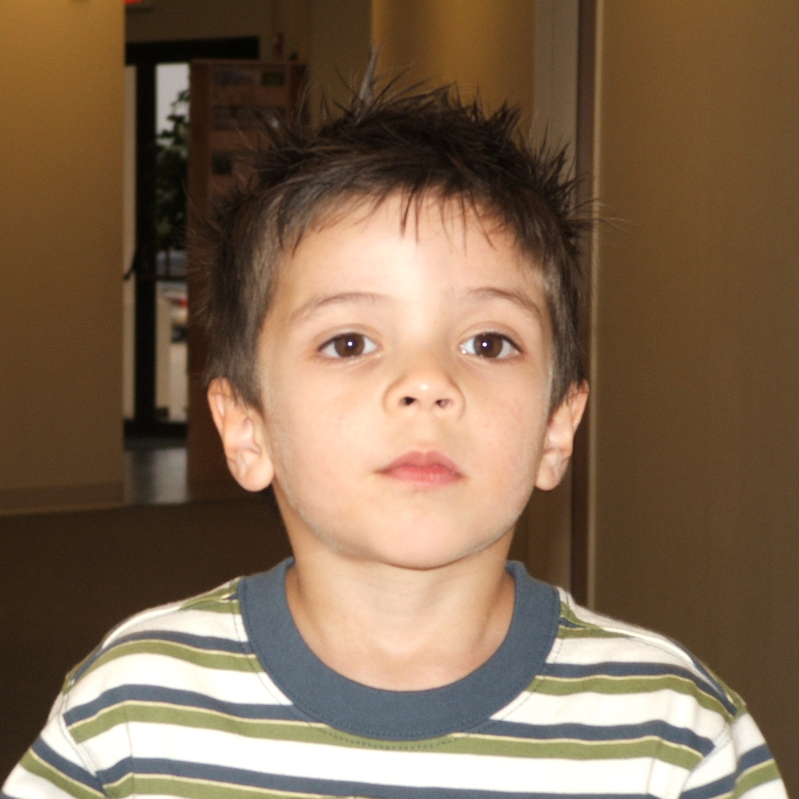

Hello, my name is Niko Saucedo. I'm 22 years old and was born here in the Dallas area and have grown up here as well. I've been attending mostly online class and have gone to a couple of classes in person at the North Lake Campus in Irving. I currently studying to get my Associate's Degree in Digital Art and Design.
Originally, right out high school, I wanted to get my real estate license and pursue real estate. Unfortunately, I got my real estate license right when Covid-19 happened, so nobody was wanting to buy or sell their home. So this discouraged me at the time since their was no business happening aroung me, so I decided to start community college. I decided to pursue my Associate's Degree in Digital Art and Design, and this will be my last class I need before I graduate. I hope to get a remote job where I can travel and work from anywhere around the world.
Me (at age 4)

Niko Saucedo
One of my main goals in life is to visit every country in the world. I know this will take a very long time and cost a lot of money, but I've always been interested in all the different cultures and ways of life aroung the world that are much different from ours here in America. I think this intrest started when I was young because of my interest in different languages. Growing up in Texas, you mainly hear English spoken but you also meet many people from diverse backgrounds and cultures, and having friends that spoke different languages with their families, I always thought it was very intriguing that people spoke and used sounds that are confusing and unknown to others but still conveyed the same message we would used to others in English. I find it hard to find the time to study different languages but currently, I understand most spoken Spanish (althought I'm not as confident in my speaking ability), and I'm learning Korean, and German.
My Interests
Football (Soccer)
Gym
Volleyball
Movies
Art
Video Games
Manga
I enjoy being active with activity such as going to the gym Monday through Friday, and also trying to play either soccer or volleyball with friends at least once a week. Along with being active, I enjoy spending time by myself and relaxing by watching movies, playing video games, reading manga, or drawing/painting.